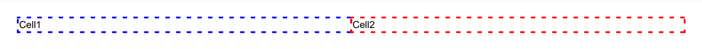
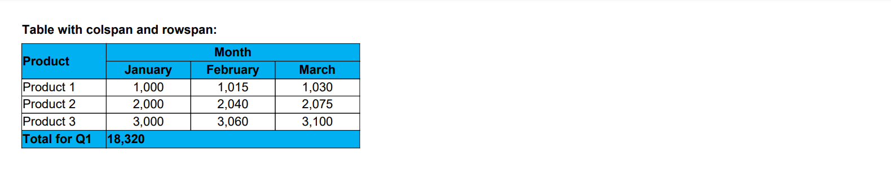
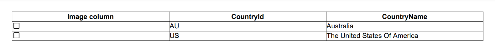
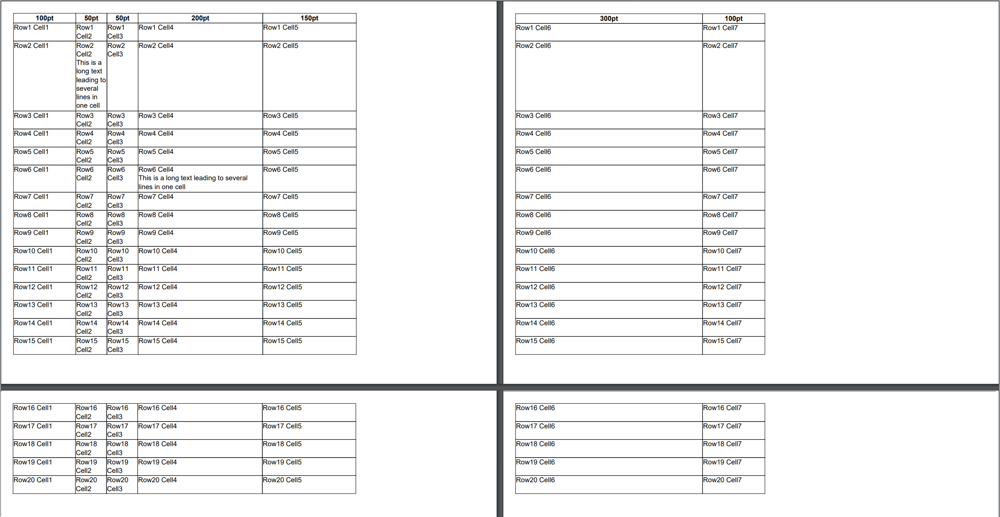

See the document
See the documentAdding Table
Brief
The article describes how to add a table to a document, configure the table and add content to it.
Details
Using the library, you can create a wide variety of tables, including:
Tables with various content. You can add paragraphs, images, lines, and nest tables in a table.
Tables of different sizes. You can set a table size, row and column sizes. If you have a large table with a lot of rows, it will continue on the next page automatically.
Tables with different formatting. You can use easy-to-set styles for a whole table and its headers, footers, content and alternate rows, as well as instruments for precise formatting of each element.
Multipage tables. You do not have to calculate whether a table will fit into a page, the library can calculate this automatically and continue the table on the next page or a number of pages if necessary.
Tables from a JSON data source.
Tables with rowspan and colspan.
Adding a Table
You can add a table to a section and to a repeating area.
To add a a table to a section, you can use the following options:
Call one of the AddTable methods.
The AddTable method allows you to add a table and specify the column width.
The AddTable method allows you to add a table,
configure the table and add content to it inside this method.
mySectionBuilder.AddTable(...)Call the AddTableToSection method
to add a table, configure the table and add content to it inside this method.
mySectionBuilder.AddTableToSection(...)Call the TableBuilder.New method and pass the instance of
SectionBuilder you want to add this table to in this method.
To add a table to a repeating area, you can use the following options:
Call the AddTable method to add a table and specify the column width.
myRepeatingAreaBuilder.AddTable(...)Call the AddTableToRepeatingArea method
to add a table, configure the table and add content to it inside this method.
myRepeatingAreaBuilder.AddTableToRepeatingArea(...)
Configuring the Table
When you add a table and do not specify any style or formatting for it, it will be created with default formatting settings defined in the default table style. For details about formatting and styles, see the Formatting and Styles article.
The style and formatting for an entire table can be configured using methods of the TableBuilder class.
For example:
myTableBuilder.SetContentRowStyleHorizontalAlignment(HorizontalAlignment.Center)
Adding and Configuring Columns, Rows, and Cells
After you add a table to a section or repeating area, you should add columns, rows and cells to the table by following these steps:
Add columns to the table using one of the following options:
Call one of the AddColumn methods.
Call the AddColumnPercent method to set the column width in percent.
Call any of these methods for each column you want to add.
For example:
myTableBuilder.AddColumn().AddColumn().AddColumn();Add a row to the table by calling one of the AddRow or
AddRowToTable methods.
For example,
myTable.AddRow(...)Add cells to the row by calling one of the AddCell or
AddCellToRow methods.
The number of cells in the row must be equal to the number of columns in the table.
The style and formatting for table columns, rows and cells can be configured using the methods of
TableColumnBuilder,
TableRowBuilder, and
TableCellBuilder respectively.
Adding Content to the Table
Table content is contained in cells. A cell can contain paragraphs and nested tables.
To add a paragraph to a cell:
Call one of the AddParagraph or
AddParagraphToCell methods.
To nest a table in a cell, you can use one of the following options:
Call the AddTable method.
myTableCellBuilder.AddTable(...)Call the TableBuilder.New method and pass the instance of
TableCellBuilder you want to nest this table in.
var myTable1 = TableBuilder.New(mySectionBuilder)
Configuring Table Borders
In the default table style, table borders have the following parameters: stroke = Solid, color = Black, width = 0.5f.
Table borders can be configured for each cell, for each row (i.e. for every cell of the row), and for a whole table.
You can set the width, height, and stroke style for each border side.
If you set one or two of the parameters, the other parameter or parameters will have the values set on a higher level - on the row level for a cell,
on the table level for a row, and in the default table style for a table.
For example, if you set only the border width for an entire table, the table will have the default border stroke style and color;
if you set only the border stroke style for a row in this table, the row will have the border width set for the table and the default border color;
if you set only the border color for a cell in this row, the cell will have the border width set for the table and the border stroke style set for the row.
Example 1. Setting table borders [hide]
DocumentBuilder.New()
.AddSection()
.AddTable()
.SetBorderWidth(2.0f)
.AddColumnToTable()
.AddColumnToTable()
.AddRow()
.SetBorderStroke(Stroke.Dashed)
.AddCell("Cell1")
.SetBorderColor(Color.Blue)
.ToRow()
.AddCell("Cell2")
.SetBorderColor(Color.Red)
.ToDocument()
.Build("Result.pdf");Example 1. Setting table borders (using configuration actions) [show]
The above code will generate the following:

Note that if any of these three border parameters are not set for a cell, row or table by direct formatting, but these parameters are specified in a style is applied to the cell, row or table, the values will be taken from the style of the corresponding element, if specified, or from a style of a higher level element. So the following code will generate the same document because the border width will be taken from the table style:
Example 2. Taking border parameters from a style [hide]
DocumentBuilder.New()
.AddSection()
.AddTable()
.ApplyStyle(StyleSheet.DefaultTableStyleBuilder().SetBorderWidth(2.0f))
.AddColumnToTable()
.AddColumnToTable()
.AddRow()
.SetBorderStroke(Stroke.Dashed)
.AddCell("Cell1")
.SetBorderColor(Color.Blue)
.ToRow()
.AddCell("Cell2")
.SetBorderColor(Color.Red)
.ToDocument()
.Build("Result.pdf");Example 2. Taking border parameters from a style (using configuration actions) [show]
Configuring Table Background Color
You can specify the background color:
For an entire table using the
TableBuilder.SetBackColor method.
For content, alternate, header, and footer rows using the
SetContentRowStyleBackColor,
SetAltRowStyleBackColor,
SetHeaderRowStyleBackColor, and
SetFooterRowStyleBackColor
methods respectively.
For a particular table row using the
TableRowBuilder.SetBackColor method.
For a particular cell using the
TableCellBuilder.SetBackColor method.
When you add a paragraph to a table cell or nest a table into a table cell, you can specify the
background color for the paragraph and for the table (the entire table, its rows, and cells)
using the SetBackColor methods of
ParagraphBuilder,
TableBuilder,
TableRowBuilder, and
TableCellBuilder.
Tables with Colspan and Rowspan
When you create a table with specifying column span and row span, make sure that the number of cells in each table row with taking into account the column span parameter is equal the number of cells in the table. You may have to add empty cells for correct table generation.
For example, you create a table with two columns and add the same number of rows to the first table row:
section.AddTable(tableBuilder =>
{
tableBuilder.AddColumn()
.AddColumn();
tableBuilder.AddRowToTable(rowBuilder =>
{
rowBuilder.AddCellToRow("cell1.1");
rowBuilder.AddCellToRow("cell1.2");
});
.....In the second row, a cell with colspan = 2 spans two columns:
tableBuilder.AddRowToTable(rowBuilder =>
{
rowBuilder.AddCellToRow("cell2.1-2", 2);
});In the third row, a cell with rowspan = 2 spans two rows, but the number of cells in the lower row must be equal to the
number of columns in the table, so it is necessary to add an empty cell:
tableBuilder.AddRowToTable(rowBuilder =>
{
rowBuilder.AddCell("cell3-4.1", 1, 2);
rowBuilder.AddCell("cell3.2");
});
tableBuilder.AddRowToTable(rowBuilder =>
{
rowBuilder.AddCell();
rowBuilder.AddCell("cell4.2");
});
});
Image Columns
When you need to create a column with a certain image in each cell of this column (for example, a column with check boxes that the user should select on a form),
you can specify this image in the method AddImageColumn or
AddImageColumnToTable. See Example 6 below.
Multipage Tables
When you create a table that spreads to two pages, it is supposed that you expect to get a book spread table, that is, a number of columns will be located on an odd page and a number of columns will be located on an even page. So if such a table is added in the beginning of a document, its first page will be empty, and the table will be generated on the second and third pages (the first book spread).
You can create a table on more than two pages. To create such a table, it is necessary to specify the number of columns
to show on each page using the method SetMultipageSpread.
For example, for a table containing 12 columns, calling
mytable.SetMultipageSpread(4, 3, 5)will make the first four columns rendered on the first page, the following three columns - on the second page, and the remaining five - on the third page. If some of the table rows do not fit into one page, they will continue on the fourth page for the first four columns, on the fifth page for the following three columns, and on the sixth page for the remaining five columns.
You can also make the library automatically calculate whether a table fits into the page or not and continue the table on the next page or a number of pages if necessary.
For this, enable the automatic multi-page spread mode using the method SetAutomaticMultipageSpreadMode.
See also
Examples
Example 3. Add simple table to a section [hide]
DocumentBuilder.New()
.AddSection()
.AddParagraph("Simple table")
.SetBold()
.SetMarginBottom(5)
.ToSection()
.AddTable()
.SetWidth(300)
.SetContentRowStyleHorizontalAlignment(HorizontalAlignment.Center)
.SetAltRowStyleHorizontalAlignment(HorizontalAlignment.Center)
.AddColumnToTable("City")
.AddColumnToTable("State")
.AddColumnToTable("Population")
.AddRow()
.AddCellToRow("New York")
.AddCellToRow("New York")
.AddCellToRow("8,336,817")
.ToTable()
.AddRow()
.AddCellToRow("Los Angeles")
.AddCellToRow("California")
.AddCellToRow("3,979,576")
.ToTable()
.AddRow()
.AddCellToRow("Chicago")
.AddCellToRow("Illinois")
.AddCellToRow("2,693,976")
.ToDocument()
.Build("Result.pdf");Example 3. Add simple table to a section (using configuration actions) [show]
The above code will generate the following:
Example 4. Add simple table to a repeating area: [hide]
DocumentBuilder.New()
.AddSection()
.AddHeaderToBothPages(100)
.AddParagraphToRepeatingArea("Repeating header with table")
.AddTable()
.AddColumnToTable("Column 1").AddColumnToTable("Column 2")
.AddRow()
.AddCellToRow("Row 1 Cell 1")
.AddCellToRow("Row 1 Cell 2")
.ToTable()
.AddRow()
.AddCellToRow("Row 2 Cell 1")
.AddCellToRow("Row 2 Cell 2")
.ToSection()
.AddParagraph("Main flow of the document")
.ToDocument()
.Build("Result.pdf");Example 4. Add simple table to a repeating area: [show]
The above code will generate the following:
Example 5. Table with colspan and rowspan:
DocumentBuilder.New()
.AddSection()
.AddParagraph("Table with colspan and rowspan:")
.SetBold()
.SetMarginBottom(5)
.ToSection().AddTable().SetWidth(300)
.AddColumnToTable().AddColumnToTable()
.AddColumnToTable().AddColumnToTable()
.AddRow()
.SetBackColor(Color.FromRgba(0, 0.69, 0.94, 1)).SetBold()
.AddCell("Product")
.SetRowSpan(2)
.SetVerticalAlignment(VerticalAlignment.Center)
.ToRow()
.AddCell("Month")
.SetColSpan(3)
.SetHorizontalAlignment(HorizontalAlignment.Center)
.ToTable()
.AddRow().SetHorizontalAlignment(HorizontalAlignment.Center)
.AddCellToRow()
.AddCellToRow("January")
.AddCellToRow("February")
.AddCellToRow("March")
.SetBackColor(Color.FromRgba(0, 0.69, 0.94, 1))
.SetBold()
.SetHorizontalAlignment(HorizontalAlignment.Center)
.ToTable().AddRow()
.SetHorizontalAlignment(HorizontalAlignment.Center)
.AddCell()
.AddParagraphToCell("Product 1")
.SetHorizontalAlignment(HorizontalAlignment.Left)
.ToRow()
.AddCellToRow("1,000")
.AddCellToRow("1,015")
.AddCellToRow("1,030")
.ToTable().AddRow()
.SetHorizontalAlignment(HorizontalAlignment.Center)
.AddCell()
.AddParagraphToCell("Product 2")
.SetHorizontalAlignment(HorizontalAlignment.Left)
.ToRow()
.AddCellToRow("2,000")
.AddCellToRow("2,040")
.AddCellToRow("2,075")
.ToTable().AddRow()
.SetHorizontalAlignment(HorizontalAlignment.Center)
.AddCell()
.AddParagraphToCell("Product 3")
.SetHorizontalAlignment(HorizontalAlignment.Left)
.ToRow()
.AddCellToRow("3,000")
.AddCellToRow("3,060")
.AddCellToRow("3,100")
.ToTable().AddRow()
.SetBackColor(Color.FromRgba(0, 0.69, 0.94, 1))
.SetBold()
.AddCellToRow("Total for Q1")
.AddCell("18,320")
.SetHorizontalAlignment(HorizontalAlignment.Left)
.SetColSpan(3)
.ToDocument().Build("Result.pdf");
The above code will generate the following:

See the documentExample 6. Add a complex table with images and tables inside: [hide]
//Create data structures for tables to avoid a lot of code and to use cycles instead
//In a real application, you can get data from an external source, database or .json file
//Define two structures in your 'Program' class, somewhere outside of methods:
internal struct Game
{
public string name;
public string logo;
public CountryResult[] result;
public Game(string name, string logo, CountryResult[] result)
{
this.name = name;
this.logo = logo;
this.result = result;
}
}
internal struct CountryResult
{
public string country;
public int[] mc;
public CountryResult(string country, int[] mc)
{
this.country = country;
this.mc = mc;
}
}
private static void Main(string[] args)
{
var folderPath = Environment.CurrentDirectory;
var imgPath = Path.Combine(folderPath, "Content", "Images");
//Fill data for the table
Game[] games =
{
new Game("2018 Winter Olympics",
Path.Combine(imgPath, "olyw23.png"),
new CountryResult[]
{
new CountryResult("Norway", new int[] {14, 14, 11 }),
new CountryResult("Germany", new int[] { 14, 10, 7 }),
new CountryResult("Canada", new int[] { 11, 8, 10 })
}),
new Game("2016 Summer Olympics",
Path.Combine(imgPath, "olys31.png"),
new CountryResult[]
{
new CountryResult("United States", new int[] { 46, 37, 38 }),
new CountryResult("Great Britain", new int[] { 27, 23, 17 }),
new CountryResult("China", new int[] { 26, 18, 26 })
}),
new Game("2014 Winter Olympics",
Path.Combine(imgPath, "olyw22.png"),
new CountryResult[]
{
new CountryResult("Russia", new int[] { 11, 10, 9 }),
new CountryResult("Norway", new int[] { 11, 5, 10 }),
new CountryResult("Canada", new int[] { 10, 10, 5 })
})
};
// Create a document and add a section to it
var document = DocumentBuilder.New();
var section = document.AddSection()
.AddParagraph("Complex table with images and table in table:")
.SetBold()
.SetMarginBottom(5)
.ToSection();
//Add a table to the section
var outerTableBuilder = section.AddTable()
.SetHeaderRowStyleMinHeight(20)
.SetHeaderRowStyleBackColor(Color.Gray)
.AddColumnPercentToTable("Games", 25)
.AddColumnPercentToTable("Logo", 25)
.AddColumnPercent("Winners", 50)
.ToTable();
//Fill the table with the data
foreach (Game game in games)
{
var cell = outerTableBuilder.AddRow()
.AddCell(game.name)
.SetVerticalAlignment(VerticalAlignment.Center)
.SetHorizontalAlignment(HorizontalAlignment.Center)
.ToRow().AddCell()
.AddParagraph()
.SetAlignment(HorizontalAlignment.Center)
.AddInlineImage(game.logo)
.SetScale(ScalingMode.UserDefined)
.SetHeight(70)
.ToRow().AddCell();
var tableBuilder = cell.AddTable()
.AddColumnToTable("Country")
.AddColumnToTable("Gold")
.AddColumnToTable("Silver")
.AddColumnToTable("Bronze")
.AddColumnToTable("Total")
.SetHeaderRowStyleFont(FontBuilder.New().SetSize(10).SetBold());
foreach (CountryResult countryResult in game.result)
{
var rowBuilder = tableBuilder.AddRow();
rowBuilder.AddCell()
.AddParagraph(countryResult.country)
.SetAlignment(HorizontalAlignment.Right);
int sum = 0;
foreach (int mc in countryResult.mc)
{
sum += mc;
rowBuilder
.AddCellToRow(mc.ToString());
}
rowBuilder
.AddCellToRow(sum.ToString())
.SetHorizontalAlignment(HorizontalAlignment.Center);
}
}
document.Build("Result.pdf");
}
The above code will generate the following:
 See the document
See the documentExample 7. Add a table with data from data source: [hide]
public static void CreateExample()
{
string simpleJSON = @"[
{
CountryId: 'AU',
CountryName: 'Australia'
},
{
CountryId: 'US',
CountryName: 'The United States Of America'
}]";
DocumentBuilder.New()
.AddSection()
.AddTable()
.SetDataSource(
JsonConvert.DeserializeObject<List<SimpleData>>(simpleJSON))
.ToDocument().Build("Result.pdf");
}
public class SimpleData
{
public string CountryId { get; set; }
public string CountryName { get; set; }
}
The above code will generate the following:
 See the document
See the documentExample 8. Add a table with an image column: [hide]
public static void CreateExample()
{
string simpleJSON = @"[
{
CountryId: 'AU',
CountryName: 'Australia'
},
{
CountryId: 'US',
CountryName: 'The United States Of America'
}]";
var image = ImageBuilder.New()
.SetFile(Path.Combine(Environment.CurrentDirectory,
"Content", "Images", "checkbox.png"))
.SetScale(ScalingMode.UserDefined)
.SetSize(12, 12)
.SetMargins(2);
DocumentBuilder.New()
.AddSection()
.AddTable()
.AddImageColumnToTable("Image column", image)
.SetDataSource(
JsonConvert.DeserializeObject<List<SimpleData>>(simpleJSON))
.ToDocument().Build("Result.pdf");
}
public class SimpleData
{
public string CountryId { get; set; }
public string CountryName { get; set; }
}
The above code will generate the following:

See the documentExample 9. Add a multipage spread table [hide]
var builder = DocumentBuilder.New();
TableBuilder t = builder.AddSection().AddTable()
.SetMultipageSpread(4, 3)
.AddColumnToTable("100pt", 100).AddColumnToTable("50pt", 50)
.AddColumnToTable("50pt", 50).AddColumnPercentToTable("50%", 50)
.AddColumnToTable("150pt", 150).AddColumnToTable("300pt", 300)
.AddColumnPercentToTable("10%", 10);
for (int i = 1; i <= 20; i++)
{
TableRowBuilder r = t.AddRow();
for (int j = 1; j <= 7; j++)
{
TableCellBuilder c = r.AddCell("Row" + i.ToString() + " Cell" + j.ToString());
if (((i == 2) & (j == 2)) || ((i == 6) & (j == 4)))
c.AddParagraph("This is a long text leading to several lines in one cell");
}
}
builder.Build("Result.pdf");
The above code will generate the following:
 See the document
See the documentExample 10. Add a multipage spread table (using actions) [show]
Example 11. Add a multipage spread table with the enabled automatic multipage spread mode [hide]
var builder = DocumentBuilder.New();
TableBuilder t = builder
.AddSection()
.AddTable()
.SetAutomaticMultipageSpreadMode()
.AddColumnToTable("100pt", 100)
.AddColumnToTable("50pt", 50)
.AddColumnToTable("50pt", 50)
.AddColumnToTable("200pt", 200)
.AddColumnToTable("150pt", 150)
// The last two columns do not fit into the first page, so they will be rendered on the second page:
.AddColumnToTable("300pt", 300)
.AddColumnToTable("100pt", 100);
for (int i = 1; i <= 20; i++)
{
TableRowBuilder r = t.AddRow();
for (int j = 1; j <= 7; j++)
{
TableCellBuilder c = r.AddCell("Row" + i + " Cell" + j);
if (i == 2 & j == 2 || i == 6 & j == 4)
c.AddParagraph("This is a long text leading to several lines in one cell");
}
}
builder.Build("Result.pdf");
The above code will generate the following:

See the document